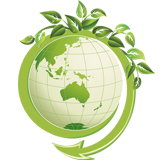

Многие современные дачи и загородные дома по комфорту проживания не хуже городских квартир.
Для решения проблем с отводом сточных вод рекомендуется устанавливать автономные
канализации, что это такое, мало кто знает, зато с таким понятием сталкиваются всё чаще и чаще.
Далеко не в каждом загородном посёлке есть возможность подключиться к системе центрального
водоотведения, поэтому комфортное проживание в доме стоит под вопросом. Чтобы не
отказываться от привычных удобств, можно установить автономную канализационную систему.
Есть несколько способов её обустройства, поэтому важно правильно определиться с выбором.
Мало кто знает, как правильно выбрать подходящую установку, и какую схему канализации
лучше использовать для конкретного типа участка, поэтому следует прислушаться к советам
профессионалов.

ООО «АкваТекс» - инжиниринговая
компания,использование инновационных
технологий очистки сточных в.
Центральный офис:
Адрес: 119526 Москва
Ленинский пр-т, д. 146, Офис 512
+7 (495) 411 13 14